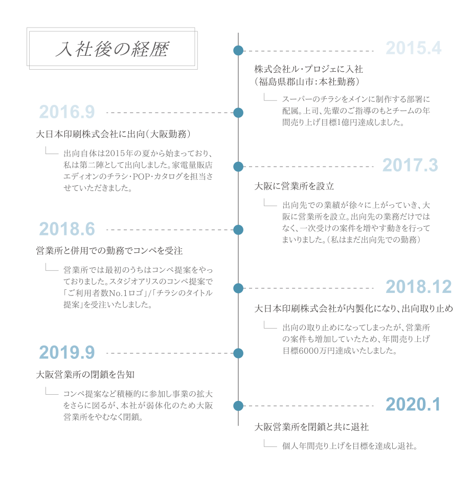
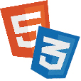

東北芸術工科大学を卒業後、福島の広告代理店に入社。主にチラシ・ポスター・コンペ提案物など手掛けていた。入社後一年半で大阪の大日本印刷株式会社に出向し、そこでは家電量販店「エディオン」のチラシを制作。後に、大阪に営業所を設立し一次受けの案件を増やしていき事業を拡大を図ったが、本社の弱体化により大阪営業所をやむなく閉鎖。これを機にスキルの幅を広げるために転職を決意。

-
Excel
スキル：★★★☆☆イラストレーターでリストを流し込みをするための整理やSUM関数・IF関数やグラフ作成が可能。
-

HTML/CSS
スキル：★★☆☆☆基本知識はありますが、実務経験はありません。使用エディタはVisualStudioCodeになります。
-
Javascript
スキル：★☆☆☆☆勉強中です。jQueryのライブラリーの実装は書籍を見ながら書いております。
-
Photoshop
スキル：★★★☆☆写真の切り抜き・合成・色補正など基本操作は可能ですが、デザイン構成はIllustratorを使用しております。
-
Illustrator
スキル：★★★★★チラシ・ポスター制作でデザイン構成ををメインしていたソフトです。ショートカットキーも使用可能。